COVID19 DATA PROVINCES AND REGIONS UPDATED TO APRIL 3 2020.
This report is related to data processing on the spread of COVID-19 in Italy and single regions/provinces. Data are provided by the Italian Civil Protection:
"https://github.com/pcm-dpc/COVID-19"
See all reports and articles: marcelchiarello.github.io/showdata
Author: Marcello Chiarello
marcello.chiarello@outlook.com
Contents
DATA PUGLIA
RUN DATA: 03-Apr-2020
Tabella casi giornalieri per la regione Puglia(Daily cases for the region)
TABLE =
6×3 table
province casiGiornalieri casiTotali
_______________________ _______________ __________
"Bari" 41 741
"Barletta-Andria-Trani" 3 129
"Brindisi" 10 218
"Foggia" 25 527
"Lecce" 6 359
"Taranto" 15 178
"Casi giornalieri totali:" "100" " (Region daily cases)"
"Casi regione totali:" "2152" " (Region total cases)"
https://marcelchiarello.github.io/showdata/
 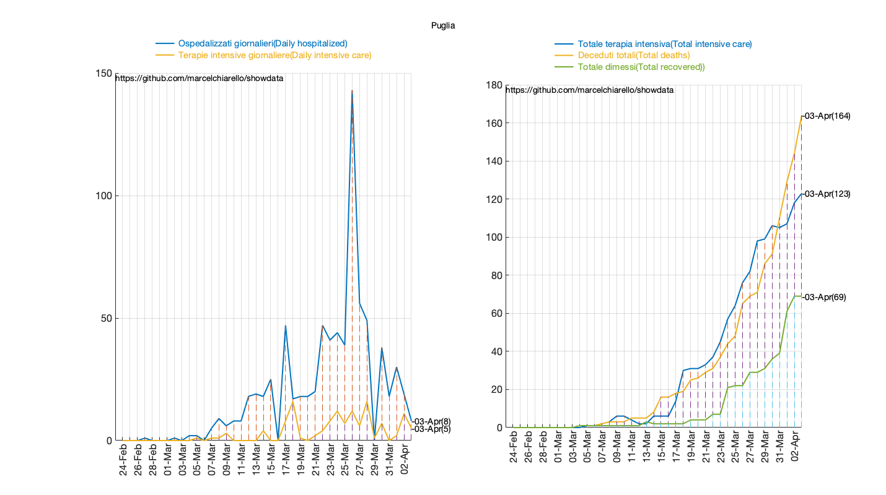
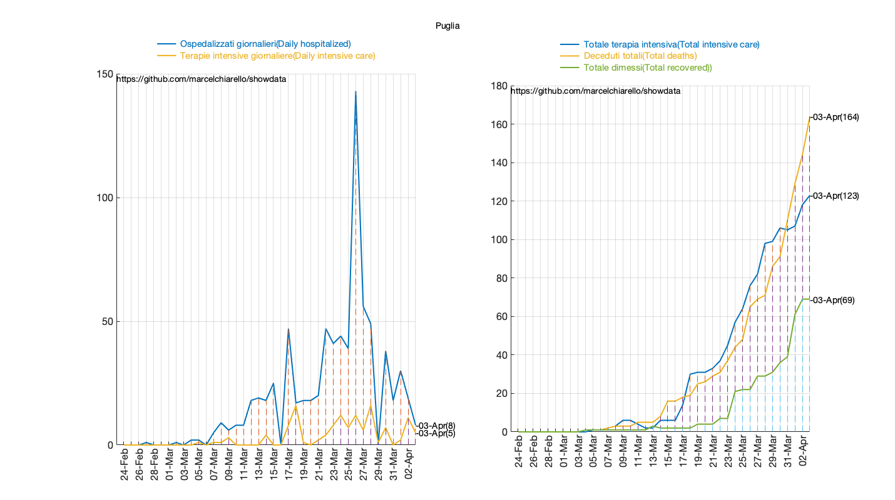 DATA LOMBARDIA
RUN DATA: 03-Apr-2020
Tabella casi giornalieri per la regione Lombardia(Daily cases for the region)
TABLE =
12×3 table
province casiGiornalieri casiTotali
_______________________ _______________ __________
"Bergamo" 144 9315
"Brescia" 257 9014
"Como" 51 1256
"Cremona" 123 4097
"Lecco" 42 1594
"Lodi" 25 2214
"Mantova" 102 1884
"Milano" 387 10391
"Monza e della Brianza" 141 2774
"Pavia" 46 2331
"Sondrio" 20 537
"Varese" 83 1085
"Casi giornalieri totali:" "1421" " (Region daily cases)"
"Casi regione totali:" "46492" " (Region total cases)"
https://marcelchiarello.github.io/showdata/
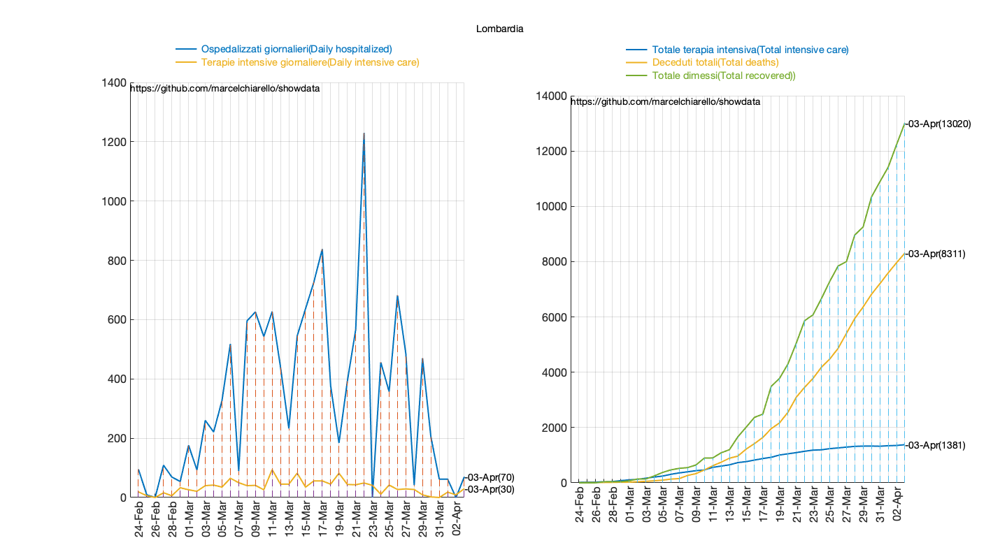 DATA VENETO
RUN DATA: 03-Apr-2020
Tabella casi giornalieri per la regione Veneto(Daily cases for the region)
TABLE =
7×3 table
province casiGiornalieri casiTotali
_________ _______________ __________
"Belluno" 12 499
"Padova" 64 2553
"Rovigo" 28 180
"Treviso" 51 1657
"Venezia" 28 1321
"Verona" 83 2488
"Vicenza" 80 1514
"Casi giornalieri totali:" "346" " (Region daily cases)"
"Casi regione totali:" "10212" " (Region total cases)"
https://marcelchiarello.github.io/showdata/
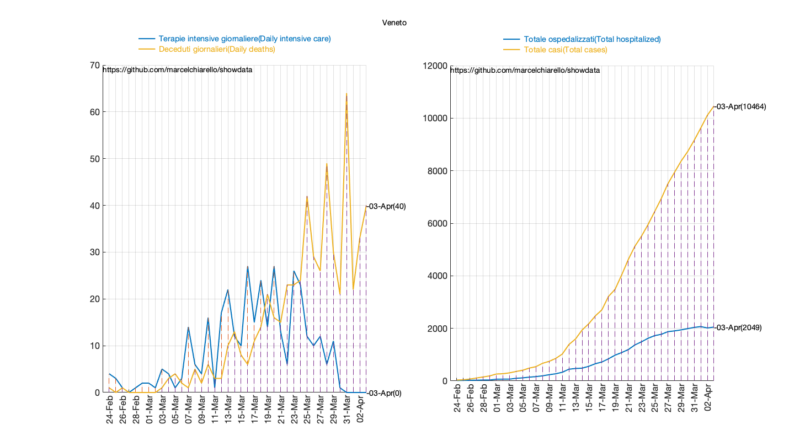 DATA PIEMONTE
RUN DATA: 03-Apr-2020
Tabella casi giornalieri per la regione Piemonte(Daily cases for the region)
TABLE =
8×3 table
province casiGiornalieri casiTotali
______________________ _______________ __________
"Alessandria" 63 1491
"Asti" 22 523
"Biella" 19 542
"Cuneo" 24 850
"Novara" 28 930
"Torino" 304 5295
"Verbano-Cusio-Ossola" 61 505
"Vercelli" 45 565
"Casi giornalieri totali:" "566" " (Region daily cases)"
"Casi regione totali:" "10701" " (Region total cases)"
https://marcelchiarello.github.io/showdata/
 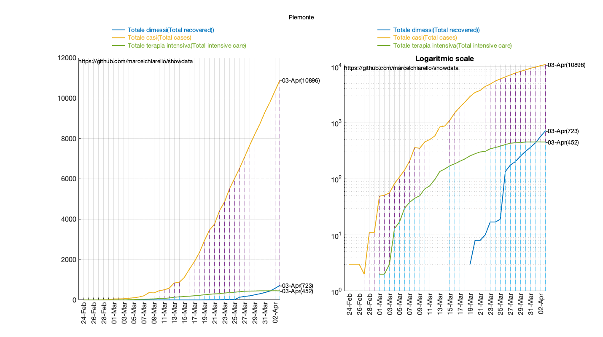
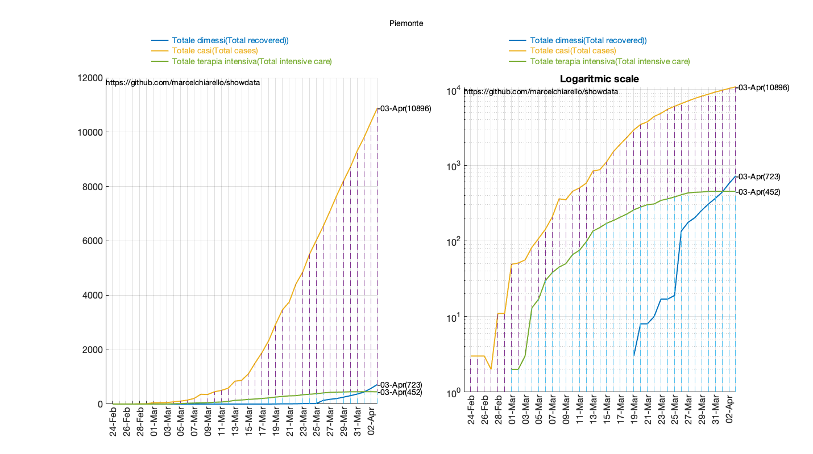 DATA EMILIA ROMAGNA
RUN DATA: 03-Apr-2020
Tabella casi giornalieri per la regione Emilia-Romagna(Daily cases for the region)
TABLE =
9×3 table
province casiGiornalieri casiTotali
____________________ _______________ __________
"Bologna" 114 2339
"Ferrara" 27 368
"Forlì-Cesena" 77 866
"Modena" 82 2498
"Parma" 34 2083
"Piacenza" 46 2811
"Ravenna" 29 656
"Reggio nell'Emilia" 135 2800
"Rimini" 55 1511
"Casi giornalieri totali:" "599" " (Region daily cases)"
"Casi regione totali:" "15932" " (Region total cases)"
https://marcelchiarello.github.io/showdata/
 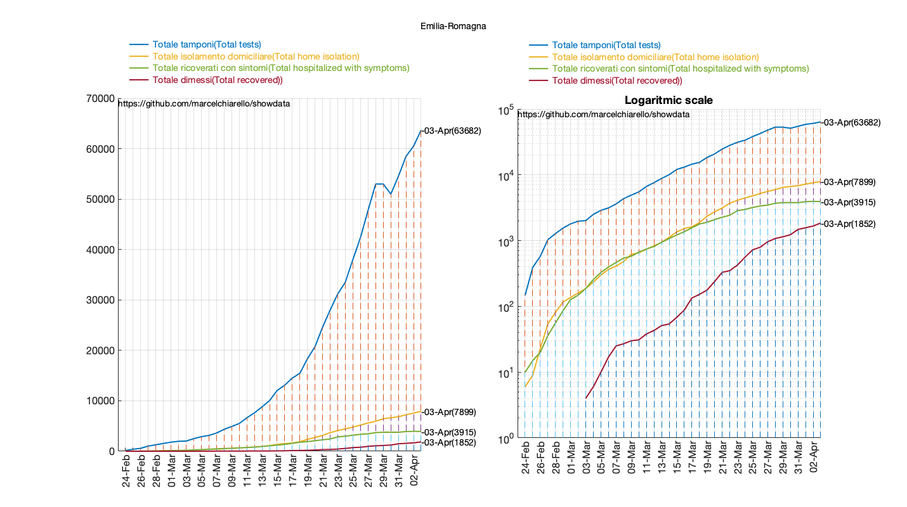
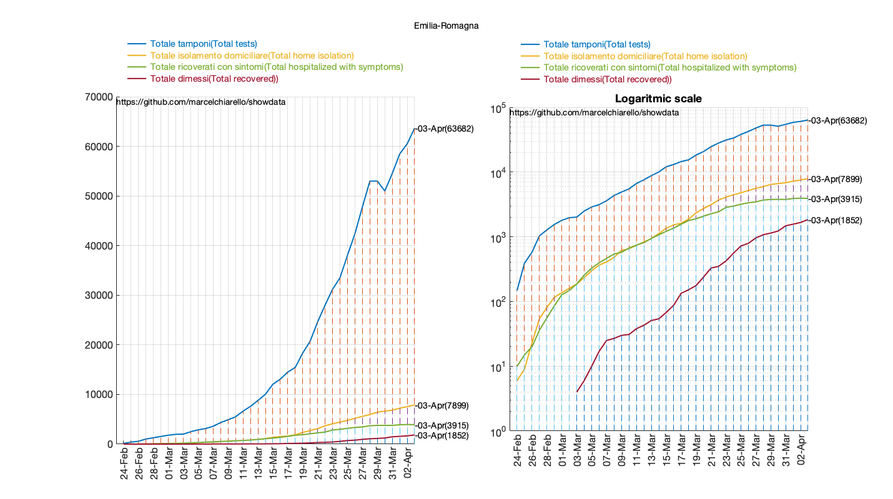 DATA CAMPANIA
RUN DATA: 03-Apr-2020
Tabella casi giornalieri per la regione Campania(Daily cases for the region)
TABLE =
5×3 table
province casiGiornalieri casiTotali
___________ _______________ __________
"Avellino" 50 340
"Benevento" 0 85
"Caserta" 9 264
"Napoli" 149 1428
"Salerno" 15 400
"Casi giornalieri totali:" "223" " (Region daily cases)"
"Casi regione totali:" "2517" " (Region total cases)"
https://marcelchiarello.github.io/showdata/
DATA SICILIA
RUN DATA: 03-Apr-2020
Tabella casi giornalieri per la regione Sicilia(Daily cases for the region)
TABLE =
9×3 table
province casiGiornalieri casiTotali
_______________ _______________ __________
"Agrigento" 2 100
"Caltanissetta" 3 83
"Catania" 15 559
"Enna" 19 257
"Messina" 14 337
"Palermo" 8 290
"Ragusa" 1 46
"Siracusa" 5 106
"Trapani" 1 81
"Casi giornalieri totali:" "68" " (Region daily cases)"
"Casi regione totali:" "1859" " (Region total cases)"
https://marcelchiarello.github.io/showdata/

DATA ABRUZZO
RUN DATA: 03-Apr-2020
Tabella casi giornalieri per la regione Abruzzo(Daily cases for the region)
TABLE =
4×3 table
province casiGiornalieri casiTotali
__________ _______________ __________
"Chieti" 11 310
"L'Aquila" 26 166
"Pescara" 23 669
"Teramo" 6 418
"Casi giornalieri totali:" "66" " (Region daily cases)"
"Casi regione totali:" "1563" " (Region total cases)"
https://marcelchiarello.github.io/showdata/
 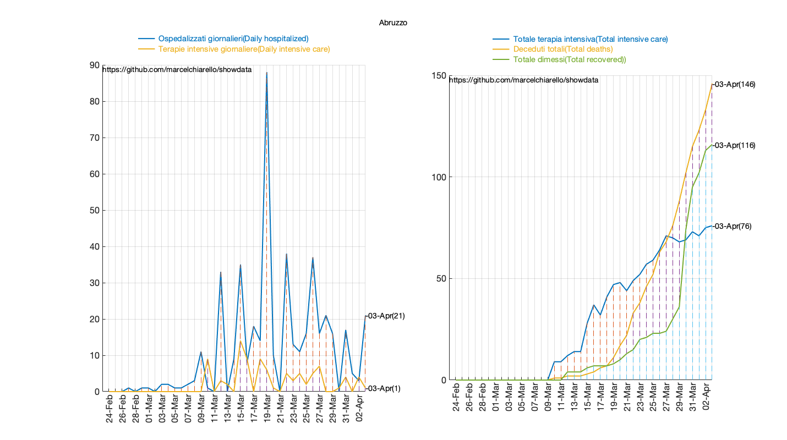
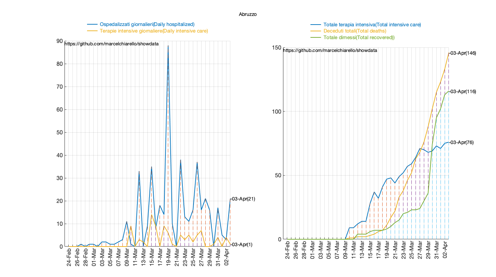 DATA BASILICATA
RUN DATA: 03-Apr-2020
Tabella casi giornalieri per la regione Basilicata(Daily cases for the region)
TABLE =
2×3 table
province casiGiornalieri casiTotali
_________ _______________ __________
"Matera" 6 124
"Potenza" 9 137
"Casi giornalieri totali:" "15" " (Region daily cases)"
"Casi regione totali:" "261" " (Region total cases)"
https://marcelchiarello.github.io/showdata/
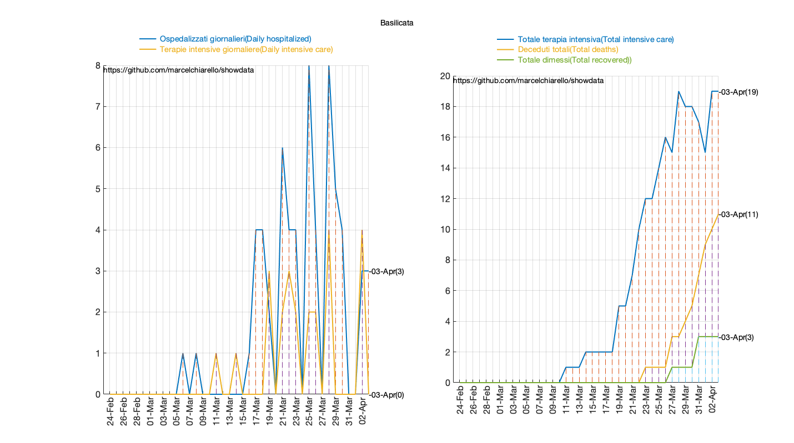 DATA CALABRIA
RUN DATA: 03-Apr-2020
Tabella casi giornalieri per la regione Calabria(Daily cases for the region)
TABLE =
5×3 table
province casiGiornalieri casiTotali
____________________ _______________ __________
"Catanzaro" 4 150
"Cosenza" 9 203
"Crotone" 12 106
"Reggio di Calabria" 11 218
"Vibo Valentia" 6 54
"Casi giornalieri totali:" "42" " (Region daily cases)"
"Casi regione totali:" "731" " (Region total cases)"
https://marcelchiarello.github.io/showdata/
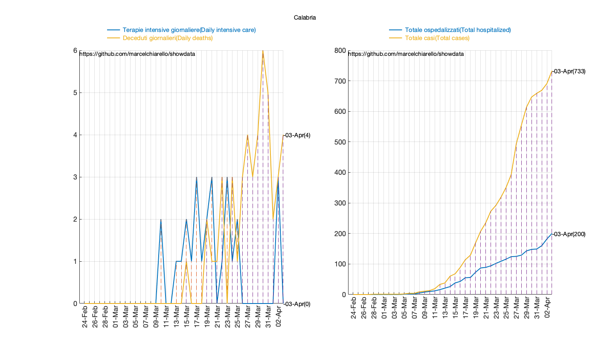 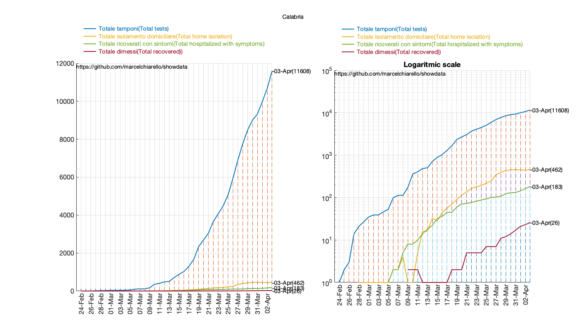 DATA CAMPANIA
RUN DATA: 03-Apr-2020
Tabella casi giornalieri per la regione Campania(Daily cases for the region)
TABLE =
5×3 table
province casiGiornalieri casiTotali
___________ _______________ __________
"Avellino" 50 340
"Benevento" 0 85
"Caserta" 9 264
"Napoli" 149 1428
"Salerno" 15 400
"Casi giornalieri totali:" "223" " (Region daily cases)"
"Casi regione totali:" "2517" " (Region total cases)"
https://marcelchiarello.github.io/showdata/

DATA VENEZIA GIULIA
RUN DATA: 03-Apr-2020
Tabella casi giornalieri per la regione Friuli Venezia Giulia(Daily cases for the region)
TABLE =
4×3 table
province casiGiornalieri casiTotali
___________ _______________ __________
"Gorizia" 1 111
"Pordenone" 11 452
"Trieste" 31 629
"Udine" 40 681
"Casi giornalieri totali:" "83" " (Region daily cases)"
"Casi regione totali:" "1873" " (Region total cases)"
https://marcelchiarello.github.io/showdata/
DATA LAZIO
RUN DATA: 03-Apr-2020
Tabella casi giornalieri per la regione Lazio(Daily cases for the region)
TABLE =
5×3 table
province casiGiornalieri casiTotali
___________ _______________ __________
"Frosinone" 20 354
"Latina" 24 304
"Rieti" 0 188
"Roma" 110 2503
"Viterbo" 7 226
"Casi giornalieri totali:" "161" " (Region daily cases)"
"Casi regione totali:" "3575" " (Region total cases)"
https://marcelchiarello.github.io/showdata/

DATA LIGURIA
RUN DATA: 03-Apr-2020
Tabella casi giornalieri per la regione Liguria(Daily cases for the region)
TABLE =
4×3 table
province casiGiornalieri casiTotali
___________ _______________ __________
"Genova" 27 1180
"Imperia" 3 223
"La Spezia" 73 323
"Savona" 19 264
"Casi giornalieri totali:" "122" " (Region daily cases)"
"Casi regione totali:" "1990" " (Region total cases)"
https://marcelchiarello.github.io/showdata/
DATA MARCHE
RUN DATA: 03-Apr-2020
Tabella casi giornalieri per la regione Marche(Daily cases for the region)
TABLE =
5×3 table
province casiGiornalieri casiTotali
_________________ _______________ __________
"Ancona" 52 1263
"Ascoli Piceno" 5 232
"Fermo" 14 298
"Macerata" 28 561
"Pesaro e Urbino" 30 1786
"Casi giornalieri totali:" "129" " (Region daily cases)"
"Casi regione totali:" "4140" " (Region total cases)"
https://marcelchiarello.github.io/showdata/
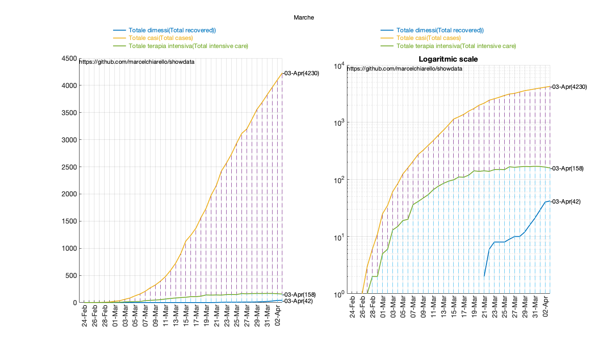 DATA MOLISE
RUN DATA: 03-Apr-2020
Tabella casi giornalieri per la regione Molise(Daily cases for the region)
TABLE =
2×3 table
province casiGiornalieri casiTotali
____________ _______________ __________
"Campobasso" 7 149
"Isernia" 4 15
"Casi giornalieri totali:" "11" " (Region daily cases)"
"Casi regione totali:" "164" " (Region total cases)"
https://marcelchiarello.github.io/showdata/
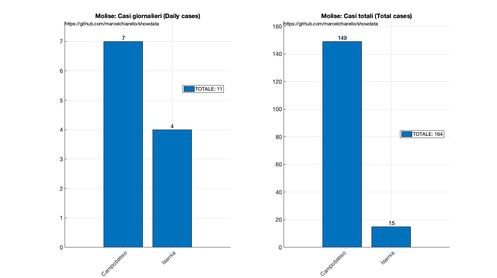 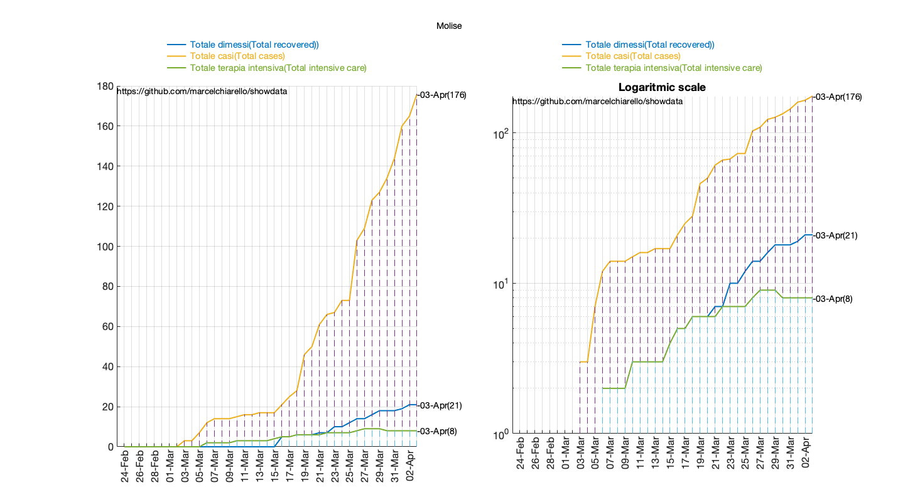 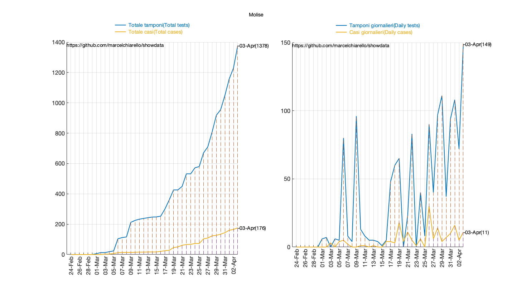 
DATA P.A. Bolzano
RUN DATA: 03-Apr-2020
Tabella casi giornalieri per la regione P.A. Bolzano(Daily cases for the region)
TABLE =
1×3 table
province casiGiornalieri casiTotali
_________ _______________ __________
"Bolzano" 80 1559
"Casi giornalieri totali:" "80" " (Region daily cases)"
"Casi regione totali:" "1559" " (Region total cases)"
https://marcelchiarello.github.io/showdata/
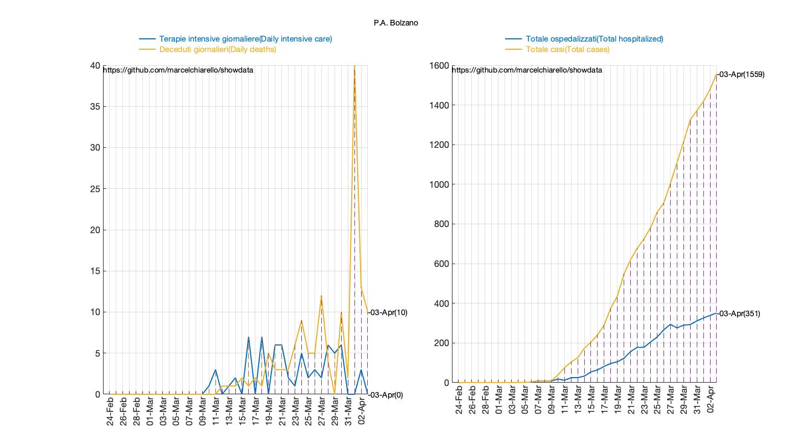 DATA P.A. Trento
RUN DATA: 03-Apr-2020
Tabella casi giornalieri per la regione P.A. Trento(Daily cases for the region)
TABLE =
1×3 table
province casiGiornalieri casiTotali
________ _______________ __________
"Trento" 106 2109
"Casi giornalieri totali:" "106" " (Region daily cases)"
"Casi regione totali:" "2109" " (Region total cases)"
https://marcelchiarello.github.io/showdata/
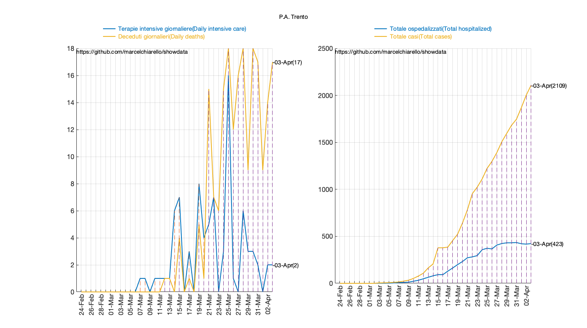 DATA SARDEGNA
RUN DATA: 03-Apr-2020
Tabella casi giornalieri per la regione Sardegna(Daily cases for the region)
TABLE =
5×3 table
province casiGiornalieri casiTotali
______________ _______________ __________
"Cagliari" 8 134
"Nuoro" 2 62
"Oristano" 1 19
"Sassari" 19 547
"Sud Sardegna" 1 63
"Casi giornalieri totali:" "31" " (Region daily cases)"
"Casi regione totali:" "825" " (Region total cases)"
https://marcelchiarello.github.io/showdata/
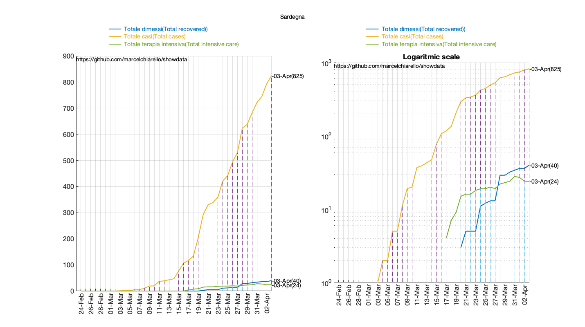 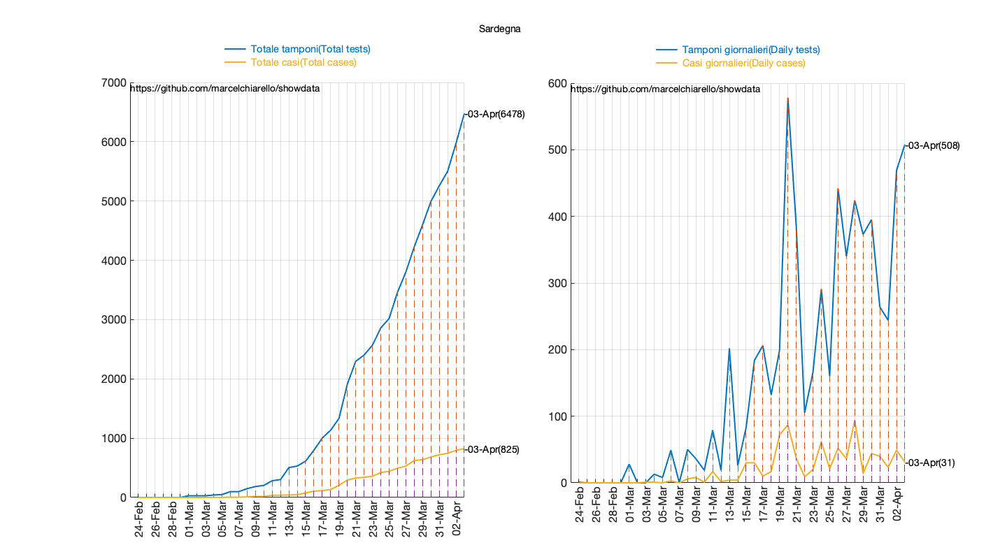 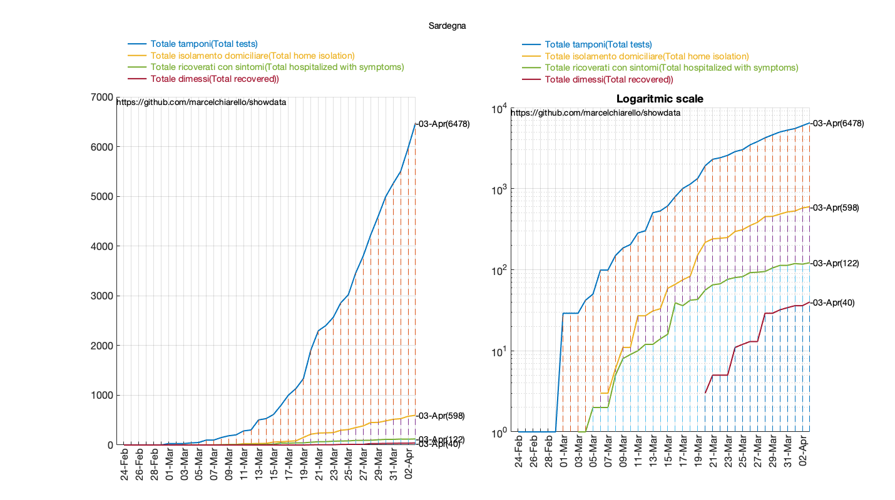 DATA TOSCANA
RUN DATA: 03-Apr-2020
Tabella casi giornalieri per la regione Toscana(Daily cases for the region)
TABLE =
10×3 table
province casiGiornalieri casiTotali
_______________ _______________ __________
"Arezzo" 1 358
"Firenze" 124 1543
"Grosseto" 0 264
"Livorno" 6 307
"Lucca" 41 843
"Massa Carrara" 0 644
"Pisa" 4 519
"Pistoia" 15 361
"Prato" 32 323
"Siena" 3 337
"Casi giornalieri totali:" "226" " (Region daily cases)"
"Casi regione totali:" "5499" " (Region total cases)"
https://marcelchiarello.github.io/showdata/
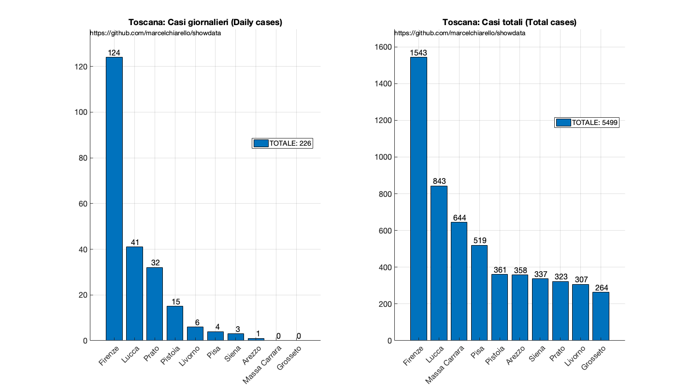 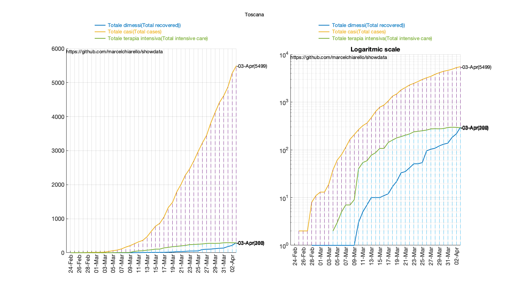 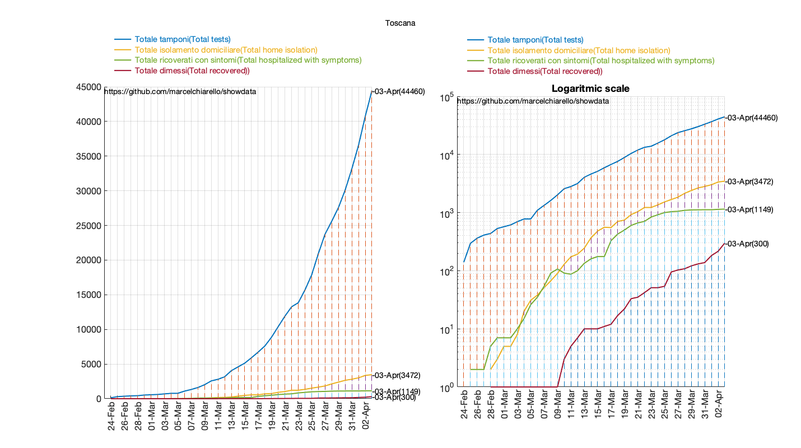 DATA UMBRIA
RUN DATA: 03-Apr-2020
Tabella casi giornalieri per la regione Umbria(Daily cases for the region)
TABLE =
2×3 table
province casiGiornalieri casiTotali
_________ _______________ __________
"Perugia" 40 884
"Terni" 11 257
"Casi giornalieri totali:" "51" " (Region daily cases)"
"Casi regione totali:" "1141" " (Region total cases)"
https://marcelchiarello.github.io/showdata/
 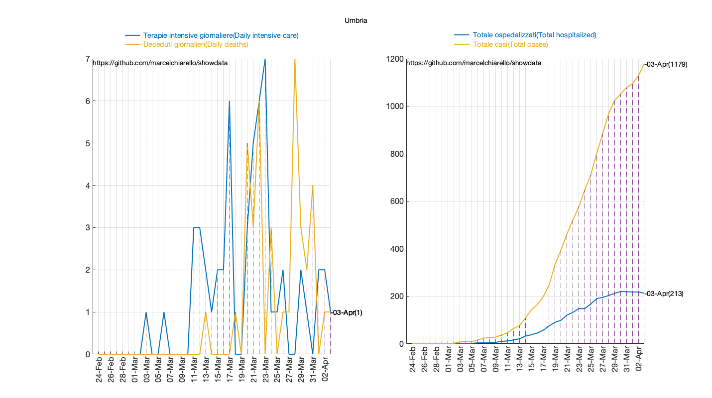
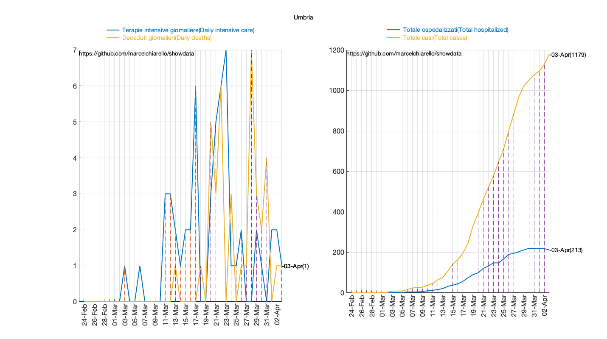 DATA VALLE D' AOSTA
RUN DATA: 03-Apr-2020
Columns 1 through 2
"Tabella casi giornalieri per la regione " "Valle d'Aosta"
Column 3
"(Daily cases for the region)"
TABLE =
1×3 table
province casiGiornalieri casiTotali
________ _______________ __________
"Aosta" 51 719
"Casi giornalieri totali:" "51" " (Region daily cases)"
"Casi regione totali:" "719" " (Region total cases)"
https://marcelchiarello.github.io/showdata/
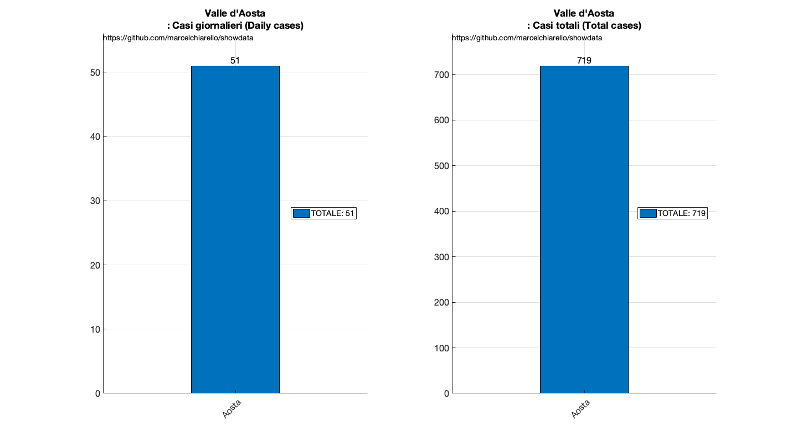 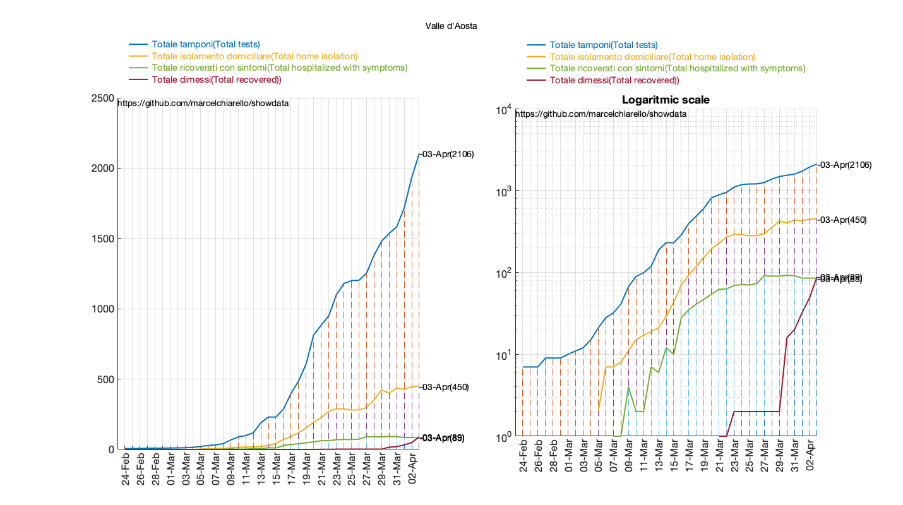